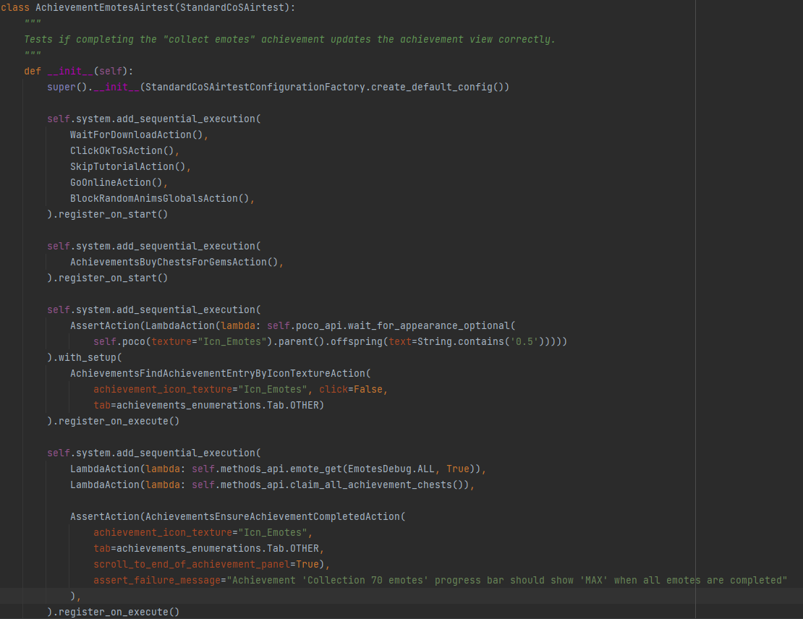

Making this menu work is all about implementing systems that track user progress from all other game features.
This is achieved in Entitas by reacting to relevant server state changes.
For example, whenever the server registers a new pet being collected, a system will trigger and increment corresponding achievements.
Whenever an achievement gains enough progress to reach a new milestone, a reward will be unlocked for the user to claim.
Every achievement is also mapped to a specific bonus, meaning that completing achievements gives benefits in other parts of the game like discounts or free resources.
This of course touches sensitive parts of the game, requiring bug free code that is well tested.
Athene's Palace
Here I implemented the "Stream Drops", it is a relatively small feature that hands out items drops every 5 minutes if you are watching a stream or video
(the video player is disabled in the gif above).
The drops vary in rarity, the chances of each item drop can be seen in a scrollable list on the right. You can also scroll through your all time drops.
To make this work, there is code that runs every frame, checking if all conditions are met to give an item drop.
If they are met, a new item gets claimed and the view updated. The server validates each drop to avoid exploits.
The church also features a slot machine. Spinning the slot machine can either land you on an item slot or a "tier upgrade" slot.
If you get a tier upgrade, the value of the item pool increases.
I worked a lot on this slot machine, implementing the functionality to manually increase the slot tier in exchange for a higher cost to spin.
You can also combine two different currencies to spin on a higher tier.
Additionally, I implemented getting lucky free spins if you have completed achievement milestones aswell as the automatic creation of replays in case you get a lucky slot spin.
There is a lot of complex rendering going on because the slot machine can have many different states.
You also get to claim daily chests in this menu. Every day a new chests gets unlocked.
Auction House
The auction house allows you to create auctions and buy orders of ingame characters to trade between users.
I implemented the client logic for the creation of buy orders as well as bulk listings, allowing you to sell or buy multiple collectibles at once.
I also refactored the client code to allow for the sale of new collectibles, including blockchain characters. This of course includes a lot of UI improvements.
Additionally, I implemented the "smart-pick" functionality. This consists of asynchronous algorithms that select the most optimal collectible to buy or sell based on the selected filter configuration and other factors like average price, rarity etc.
Streamer Talents
The Streamer Talents menu depicts 6 talent trees. In each talent talent tree you are be able to select a different streamer.
Once the streamer is selected, you can pick from different talents to buff every hero that has the skin of the selected streamer equipped.
This might not make sense if you are not familiar with the game. Basically you can buff your characters.
I used the DOTween animation engine to implement new improved UI, and added functionality that automatically smart picks the best talents.
I also added a new sub menu, the "skin collection". This is an overlay which displays all skins you own of the selected streamer.
There is more complexity to the skin collection that I wont go into here.
Replay Book
The Replay feature records the gameplay in the background and generates replays of special events, such as lucky slot spins
(as can be seen in the video. Note that the media player is disabled in this case).
You can then go to the Replay book to view and interact with your replays.
I implemented:
- systems that listen to game events and initiate the creation and upload of replays (this brushes over a lot of complexity)
- logic that maintains the replay meta data, using graphql to fetch and mutate replays
- logic that maintains the local replay files, storing and deleting replays as requested by the user
- creating playlists when watching replays
- replay buttons inside of other menus that can fetch and play replays
- various related prompts
- constructing and sorting scrollable replay lists
- replay thumbnails
- general view logic that makes any kind of user interface work
This is the most complex feature that I have worked on and it touches many aspects of the game, which is why it required strong communication with team members (tons of edge cases).
The replay feature did not end up being widely used by players, which is why it is largely discontinued to save time and resources.
Seasonal Challenge
One of the first features that I implemented. For each 50 "Legendary Stars" that you collect, you unlock a reward to claim.
You can toggle the menu to review the "Golden Battle Pass". This is an in-app purchase that gives extra rewards depending on your progress.
Your progress resets every month.
Since this was one of the first features that I implemented, this was a great opportunity for me to get a proper understanding of how to make something work in Unity using C# and Entitas.
The concept is pretty simple, each milestone is represented by an entity which is indexed from 0 to 23.
Then there is a server system that reacts to every collected Legendary Star. If possible, we mark completed milestones as unlocked.
The progress is then rendered accordingly.
I then topped it off by integrading some particles and animations to create an attractive feature.
The "Golden Battle Pass" is one of the most purchased deal of the game.
Because of its popularity, the feature has been improved and extended with more functionality since.
I wont get into those here.

Airtests
I wrote automated python tests for my features using the Poco Airtest framework.
The Poco framework provides a way to automate the testing of various UI elements and interactions within the game,
such as clicking buttons, entering text, and navigating between screens, to ensure that the game behaves correctly and functions as expected.
Unit Tests
I wrote unit tests to ensure that the code works as expected.
This is of course useful for developing,
as changes to the code can be automatically checked against a suite of tests to ensure that nothing was broken in the process.
Unity Helper
I am fascinated with what can already be done with OpenAI's GPT language models. GPT4 appears to show first signs of AGI.
It seems to be able to understand how to use tools and it even managed to manipulate a human into solving a captcha.
I find it both fascinating and terrifying to imagine what AI will be able to do in the near future and what impact it might have on the world.
Let's hope that we can handle whatever is coming our way...
Please log in with your GitHub account to post a comment